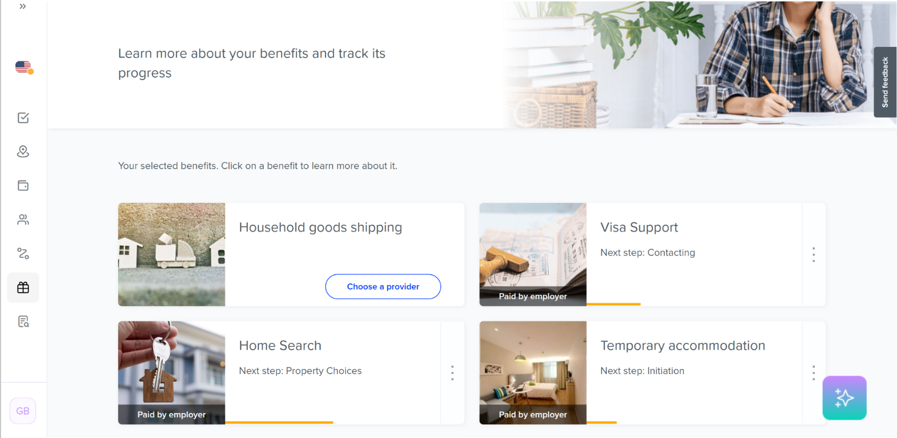
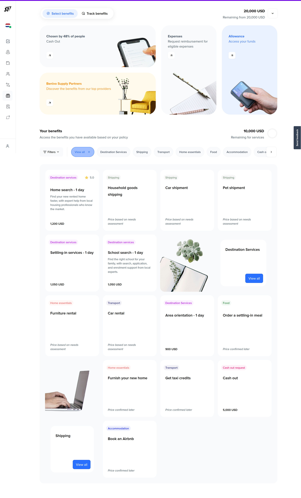
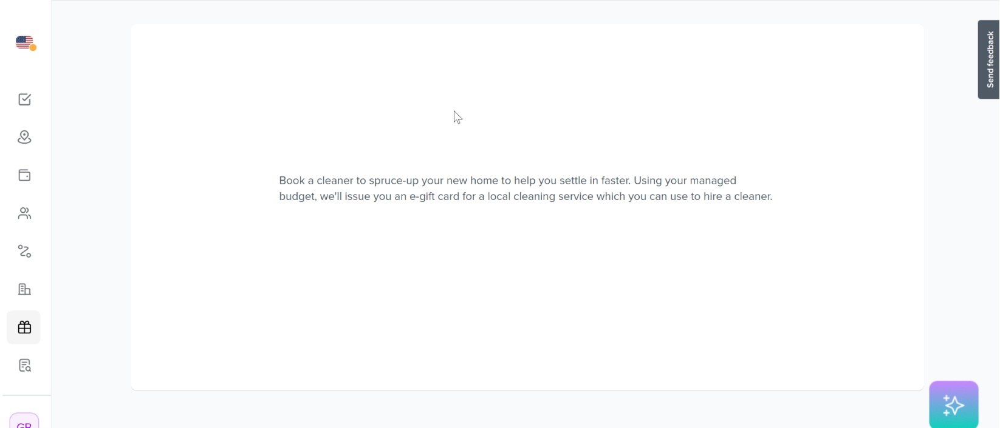
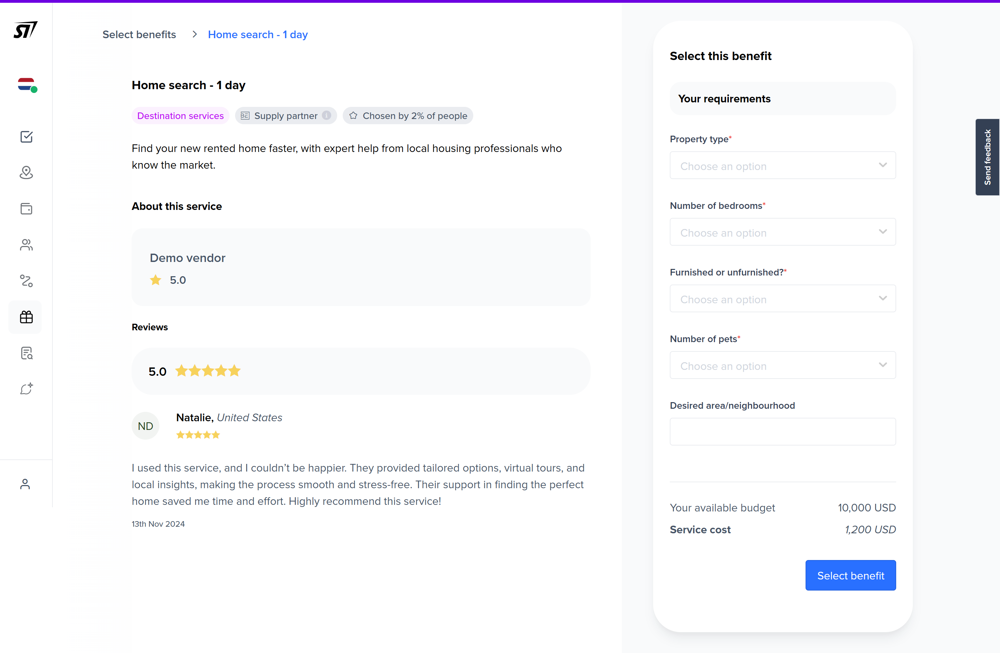

Giving employees what they needed to choose
Benivo's benefits platform had the services configured and the budget allocated. What it didn't have was any way to give users enough information to make a confident decision.
Situation
Benivo's employee platform gives relocating employees access to services funded by their employer, such as home search, household goods shipping, temporary accommodation, visa support. Where a policy allows it, employees can also allocate a managed budget across services that fit their specific move.
Analytics showed users visiting the benefits selection page repeatedly, without committing. When they finally selected, most confirmed everything in a single session that came after multiple earlier research visits. Clients were fielding the same questions from employees over and over: what do I have access to, how much can I spend, what happens when I choose something.
The product had been built to satisfy system requirements. It hadn't been built to support a decision.
Task
Users were planning, not lost. The data showed them coming back to look and compare before making their decision. The brief was to fix a confusing flow; the actual problem was that the product wasn't supporting the behaviour users were already in.
That meant filling the information gap, not simplifying the experience. Users needed to understand what they had, what it would cost, and what would happen when they chose something. None of that was on the screen.
Action
Discovery
Most users confirmed their benefits in a dedicated second session, after multiple research visits. The product had no concept of that distinction. It treated every visit as a selection moment when most were actually research moments.
I mapped the user journey across three stages: onboarding (excited but anxious, wanting to understand what was available), planning (comparing services, uncertain about costs, looking for reassurance), and arrival (ready to finalise, needing a clear path). A competitor review confirmed the gap: the better products showed status clearly, but none gave users enough to decide without calling someone. That was the gap.
The problem wasn't complexity. Users were uncertain because the product wasn't giving them what they needed to decide.
Reframe
The key decision was treating this as an ecommerce problem. Relocating employees were already behaving like shoppers: browsing, comparing, and returning before committing. The product needed to work the same way. Categories, transparent pricing, descriptions that explained value, social proof, and a detail page that completed a decision rather than restated one.
Structure
Working with the designer, I defined two distinct modes for the overview: Select for benefits requiring a choice, and Track for benefits already active. The old design mixed these states with no visual logic. Budget moved to a persistent display at the top of the page, broken into what was available for services and for allowance separately. Users had been navigating a spending decision without knowing what they were spending.


The service detail page
This was the screen that needed to do the most work, and it was designed content-first. Rather than fitting copy to a layout, I mapped everything a user would need to make a confident decision, in the order they would need it: what the service is, who provides it, what other users thought of it, what it costs against their remaining budget, and what they need to provide to initiate it. That document went to the designer as a brief before any interface work began.
The equivalent screen in the old product was two sentences floating in a white page with no visible call to action. Some users visited the benefits section more than fifty times because the page they needed to feel confident simply didn't exist.


A new surface
For users whose employers had configured few or no benefits, the platform could now surface Benivo's own supply partner network as an option. Previously, those users landed on a near-empty screen with nowhere to go. The redesign gave them a starting point, and extended the product's reach beyond users with fully configured employer policies.
Result
The CES score for ease of benefit selection improved from 5.7 to 6.4 out of 7 following the redesign, across 86 post-launch responses. That's the direct measure of what the work set out to do: make it easier for employees to understand what they had and act on it.
Support enquiry volume averaged around 3% of sessions post-launch. Low enquiry rates suggest the platform, its content, and the service offering are clear and intuitive for employees. The supply partner surface extended the product's reach to users who would previously have had nothing to engage with at all.
The redesign primarily serves Managed Budget policies, where employees actively choose from a pool of services. Managed Services, where benefits are pre-configured by the employer, remains the dominant delivery model across the current client base. Volume reflects that mix, and is driven more by assignment and internship start dates than by any interface change.
Benivo is a global mobility and relocation platform. CES figures reflect survey responses collected after the V2 release in August. Other outcomes reflect post-launch data and client feedback from the months following launch.